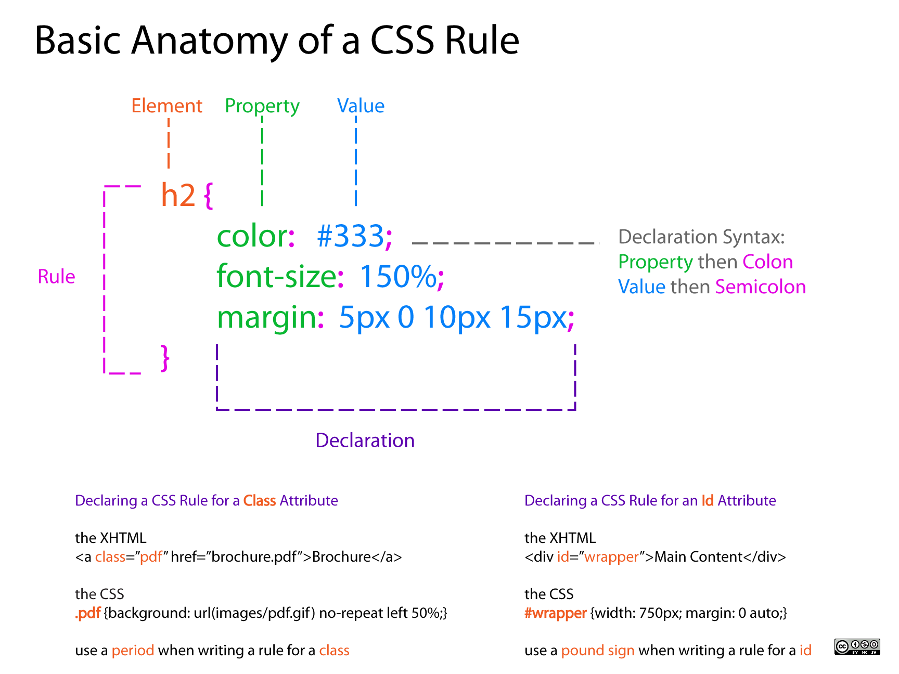
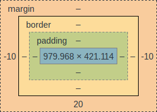

CSS as Art
Proceedural, vector graphics in the browser
By Chris Cauley
What is CSS?

Where did CSS come from?
- About as old as I am
- No one carried a supercomputer
- Text was usually printed and limited designers used to moveable type
- Hackers drive the development of CSS
- CSS is now half well oiled machine, half legacy code
Getting started
- Open these slides in a modern browser (chrome) with the following url: goo.gl/RQp7i5
- The link at the bottom of the page is to a (mostly empty) codepen
- Click "Change View" in the top right, and select one of the vertical editor layouts.
- Resize the JS box until it is gone.
- Note the "less" next to CSS. Certain features taught in this class will not work without this.
Anatomy of HTML
More HTML tags or content goes here
- "Proper" HTML has specific tags (style, div, p, video, form, input)
- For this class, anything goes! (Letters and dashes, no spaces)
- Tags can contain other tags.
- Attributes are normally
name="value". We're just going to use the name.
Anatomy of CSS
source: dabrook.org
{kind=link}
But For This Class...
tag-name {
background: yellow;
border: 10px black solid;
height: 20%;
width: 20%;
}
another-tag {
width: 100%;
height: 50%;
}
[green] {
background: green;
}
/* in general:
SOME_SELECTOR {
PROP1: VALUE1;
PROP2: VALUE2;
}
*/
/* DANGER ZONE */
- Without punctuation, the selector is just the name of the tag
[attribute]selects anything with (any value of) that attribute- Inside the braces
{}modifies anything matching that selector - Rules are a series of property-value pairs
CSS as stackable boxes
outer {
background: white;
height: 500px;
width: 500px;
}
box {
border: 10px solid black;
height: 25%;
width: 25%;
}
[a] {
background-color: red;
}
[b] {
background-color: blue;
}
/* DANGER ZONE */
The Box Model

- Margin: Space between boxes
- Border: Styled boundary
- Padding: Space from border
- Content: Stuff inside the box
- ---
- px: Pixels
- %: relative to parent
- Measure from:
top right bottom left
In this class, width (or height) = border + padding + content
Absolute Positioning FTW!
box {
position: absolute;
height: 100px;
width: 100px;
}
[a] { background-color: darkvoilet; }
[b] { background-color: darkgoldenrod; }
[c] { background-color: darkcyan; }
[pb], [pt] { left: 20%; }
[pb] { bottom: 20%; }
[pt] { top: 20%; }
/* DANGER ZONE */
Making Shapes: Border Radius
CSS Transforms: The Fun Stuff
Gradients
<< INSERT CONTENT HERE>>
Cropping (Advanced Ninja Shit)
You can copy and paste the code pen here if you want. I couldn't be bothered.
Stuff not covered in this class
- box-shadow
- psuedo Elements
- pseudo-classes
- -webkit-box-reflect
- animations
- transition